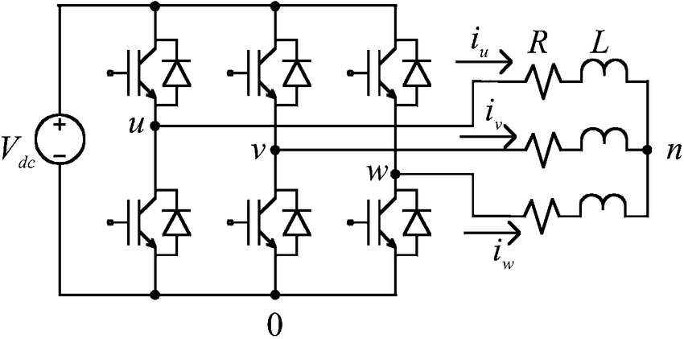

Tutorial: Voltage Source Inverter¶
Goal: Develop control code for 3-phase voltage source inverter (VSI).
Complexity: 3 / 5
Estimated Time: 60 min
This tutorial goes over creating:
Periodic control task which updates the AMDC’s PWM outputs with sinusoidal references
Command interface to update the controller’s state (e.g., output amplitude and frequency)
Tutorial Requirements¶
Working AMDC hardware
Completion of the hardware commands tutorial
Multimeter and/or oscilloscope for validation of I/O
Introduction¶
The AMDC control code is based on tasks which execute at a periodic time interval. The task state can be influenced externally (i.e. from the host) via commands.
For more information, read the firmware architecture documentation.
This tutorial provides the source code for:
basic control task which updates the AMDC PWM outputs
basic command handler for interactions with the control task
VSI Control Operation¶
{kind=link}
The voltage source inverter control that is developed in this tutorial is targeting the topology[1] depicted on the right. The goal of the system is to create sinusoidal voltages using a standard two level, 3-phase inverter. This is done by varying the duty cycle applying to each half-bridge over time. The desired output for the three phases is given as:
where \(\hat{V}\) is the peak voltage of the sinusoid and \(\omega\) is the angular frequency in rad/s. For example, for typical 60 Hz voltages, \(\omega = 2\pi \times 60\) rad/s.
Hardware Support from AMDC¶
The default FPGA firmware in the AMDC already has the circuits which implements the triangle PWM carrier signal and the comparators for output signal generation. This means that the user is only responsible for generating the reference duty cyle value; the FPGA takes care of converting the duty cyle into output pulses.
Therefore, the C-code controller for the VSI simply needs to compute normalized voltages per (1) and then update the FPGA registers with the requested duty ratios.
C-Code Controller¶
The essence of the control code is a function that is executed every control step. We will refer to this function as the callback function. The AMDC system will run the callback function at the requested sample interval. Typically, the control interval is 100 usec, or 10 kHz.
The callback function for this example VSI controller is shown below:
double Ts = 1.0 / 10000.0; // [sec]
double theta = 0.0; // [rad]
double omega = 377.0; // [rad/s]
double Do = 0.8; // [--]
// This callback function is executed every Ts seconds
// (e.g. 1/10000 sec) by the system scheduler
void example_callback(void)
{
// Update theta
theta += (Ts * omega);
// Wrap to 2*pi
theta = fmod(theta, 2.0 * M_PI);
// Calculate desired duty ratios
duty_a = 0.5 + Do/2.0 * cos(theta);
duty_b = 0.5 + Do/2.0 * cos(theta - 2.0*M_PI/3.0);
duty_c = 0.5 + Do/2.0 * cos(theta - 4.0*M_PI/3.0);
// Update PWM peripheral in FPGA
pwm_set_duty(0, duty_a); // Set HB1 duty ratio (INV1, PWM1 and PWM2)
pwm_set_duty(1, duty_b); // Set HB2 duty ratio (INV1, PWM3 and PWM4)
pwm_set_duty(2, duty_c); // Set HB3 duty ratio (INV1, PWM5 and PWM6)
}
C-Code Variable Types¶
A quick aside on the supported variable types on the AMDC.
The processor running the control code is the ARM Cortex-A9 core, which is embedded in the Xilinx Zynq-7000 SoC, which itself exists on the PicoZed module.
The Cortex-A9 is a powerful core which has hardware support for both integer and floating point math.
Specifically, double precision math is support via hardware circuits, so users are encouraged to use double types in their control code.
Note that using float is also fine, but may result in precision loss.
Hence, why the example code above uses double for all controller variables.
Task Template C-Code¶
Now that we have our C-code controller implementation, we need to hook it up to the AMDC system so that the callback will be executed.
This is done by creating one task module (e.g., task_controller) that has both header (task_controller.h) and C-code (task_controller.c) files.
The template code for these files is provided below:
Template Task *.h File¶
task_controller.h:
#ifndef TASK_CONTROLLER_H
#define TASK_CONTROLLER_H
#include "sys/scheduler.h"
#define TASK_CONTROLLER_UPDATES_PER_SEC (10000)
#define TASK_CONTROLLER_INTERVAL_USEC (USEC_IN_SEC / TASK_CONTROLLER_UPDATES_PER_SEC)
int task_controller_init(void);
int task_controller_deinit(void);
void task_controller_callback(void *arg);
int task_controller_set_frequency(double freq);
int task_controller_set_amplitude(double amplitude);
#endif // TASK_CONTROLLER_H
Template Task *.c File¶
task_controller.c:
#ifdef APP_CONTROLLER
#include "usr/controller/task_controller.h"
#include "sys/scheduler.h"
#include "drv/pwm.h"
#include <math.h>
// Scheduler TCB which holds task "context"
static task_control_block_t tcb;
int task_controller_init(void)
{
if (scheduler_tcb_is_registered(&tcb)) {
return FAILURE;
}
// Fill TCB with parameters
scheduler_tcb_init(&tcb, task_controller_callback,
NULL, "controller", TASK_CONTROLLER_INTERVAL_USEC);
// Register task with scheduler
return scheduler_tcb_register(&tcb);
}
int task_controller_deinit(void)
{
return scheduler_tcb_unregister(&tcb);
}
double Ts = 1.0 / (double) TASK_CONTROLLER_UPDATES_PER_SEC;
double theta = 0.0; // [rad]
double omega = 377.0; // [rad/s]
double Do = 0.8; // [--]
void task_controller_callback(void *arg)
{
// Update theta
theta += (Ts * omega);
// Wrap to 2*pi
theta = fmod(theta, 2.0 * M_PI);
// Calculate desired duty ratios
double duty_a = 0.5 + Do/2.0 * cos(theta);
double duty_b = 0.5 + Do/2.0 * cos(theta - 2.0*M_PI/3.0);
double duty_c = 0.5 + Do/2.0 * cos(theta - 4.0*M_PI/3.0);
// Update PWM peripheral in FPGA
pwm_set_duty(0, duty_a); // Set HB1 duty ratio (INV1, PWM1 and PWM2)
pwm_set_duty(1, duty_b); // Set HB2 duty ratio (INV1, PWM3 and PWM4)
pwm_set_duty(2, duty_c); // Set HB3 duty ratio (INV1, PWM5 and PWM6)
}
int task_controller_set_frequency(double freq)
{
omega = freq;
return SUCCESS;
}
int task_controller_set_amplitude(double amplitude)
{
int err = FAILURE;
if (amplitude >= 0.0 && amplitude <= 1.0) {
Do = amplitude;
err = SUCCESS;
}
return err;
}
#endif // APP_CONTROLLER
Notice that the *.c code file has two parts: (i) task callback and init/deinit functions, (ii) state update functions.
These fuctions will be called from the command handler to manage the task state.
Command Template C-Code¶
The above task will simply run in the background on the AMDC, assuming the init() function is called somewhere.
However, there is no way to update the state variables of the controller in real-time while the AMDC is operating.
The user would be forced to rebuild and reprogram the AMDC each time they wanted to change the parameters.
To improve this, commands can be created so that users can dynamically change the AMDC state. This section gives template code for a baseline command.
The template command can:
Start and stop the controller task
Update the amplitude and frequency of the output voltage
For more info on commands and their role in the AMDC, read about the firmware architecture.
Template Command *.h File¶
cmd_ctrl.h:
#ifndef CMD_CTRL_H
#define CMD_CTRL_H
void cmd_ctrl_register(void);
int cmd_ctrl(int argc, char **argv);
#endif // CMD_CTRL_H
Template Command *.c File¶
cmd_ctrl.c:
#ifdef APP_CONTROLLER
#include "usr/controller/cmd/cmd_ctrl.h"
#include "sys/commands.h"
#include "sys/defines.h"
#include "sys/util.h"
#include "usr/controller/task_controller.h"
#include "drv/pwm.h"
#include <stdlib.h>
#include <string.h>
// Stores command entry for command system module
static command_entry_t cmd_entry;
// Defines help content displayed for this command
// when user types "help" at command prompt
static command_help_t cmd_help[] = {
{ "init", "Start task" },
{ "deinit", "Stop task" },
{ "freq <freq>", "Set frequency of voltage output (rad/s)" },
{ "amplitude <amp>", "Set amplitude of voltage output (0 to 1)" },
};
void cmd_ctrl_register(void)
{
commands_cmd_init(&cmd_entry, "ctrl", "Controller commands",
cmd_help, ARRAY_SIZE(cmd_help), cmd_ctrl);
commands_cmd_register(&cmd_entry);
}
int cmd_ctrl(int argc, char **argv)
{
if (argc == 2 && STREQ("init", argv[1])) {
if (task_controller_init() != SUCCESS) {
return CMD_FAILURE;
}
if (pwm_enable() != SUCCESS) {
return CMD_FAILURE;
}
return CMD_SUCCESS;
}
if (argc == 2 && STREQ("deinit", argv[1])) {
if (task_controller_deinit() != SUCCESS) {
return CMD_FAILURE;
}
if (pwm_disable() != SUCCESS) {
return CMD_FAILURE;
}
return CMD_SUCCESS;
}
if (argc == 3 && STREQ("freq", argv[1])) {
double new_freq = strtod(argv[2], NULL);
if (task_controller_set_frequency(new_freq) != SUCCESS) {
return CMD_FAILURE;
}
return CMD_SUCCESS;
}
if (argc == 3 && STREQ("amplitude", argv[1])) {
double new_amplitude = strtod(argv[2], NULL);
if (task_controller_set_amplitude(new_amplitude) != SUCCESS) {
return CMD_FAILURE;
}
return CMD_SUCCESS;
}
return CMD_INVALID_ARGUMENTS;
}
#endif // APP_CONTROLLER
Making New User App¶
Now that we have all the needed files for controlling a voltage source inverter, let’s put them all together and run the code on the AMDC. This involves making a new user app folder to house our code, so as to keep it seperate from the other code.
We will call the new user app controller in this tutorial.
Read the detailed instructions on creating a new user app in this document.
Template App *.h File¶
app_controller.h:
#ifndef APP_CONTROLLER_H
#define APP_CONTROLLER_H
void app_controller_init(void);
#endif // APP_CONTROLLER_H
Template App *.c File¶
app_controller.c:
#ifdef APP_CONTROLLER
#include "usr/controller/app_controller.h"
#include "usr/controller/cmd/cmd_ctrl.h"
void app_controller_init(void)
{
cmd_ctrl_register();
}
#endif // APP_CONTROLLER
Important
Do not forget to add your app init function to the main user_apps.c file and a compiler define for APP_CONTROLLER to enable your app!
Expected File System Structure¶
Once you have created the user app, your file system should look like this:
controller/
|-- cmd/
| |-- cmd_ctrl.c
| |-- cmd_ctrl.h
|-- task_controller.c
|-- task_controller.h
|-- app_controller.c
|-- app_controller.h
Running the VSI¶
We are finally ready to run the new VSI control code!
Build and program the new code onto the AMDC hardware.
By default, nothing will happen since the task init function is not called automatically.
However, typing help should show the new ctrl commands.
Try running the control task by typing ctrl init.
Use your multimeter and/or oscilloscope to validate the PWM outputs are working as expected.
Try changing the amplitude and frequency of the output with the appropriate commands.
Conclusion¶
Congratulations!
You have now built a new user app and created control code for the voltage source inverter. These techniques can be extended for many more control problems. Simply modify the control task callback and the command handler to implement new control algorithms.